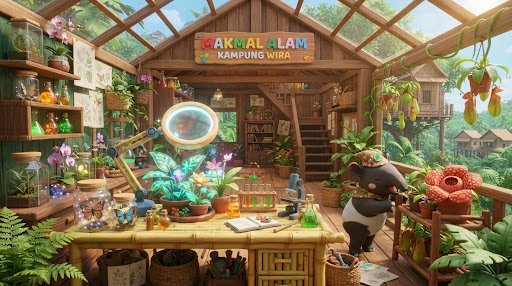

🌿
MAKMAL ALAM • RIMBA
science
KSSR Tahun 1

search_check
Kanta Ajaib Aktif
experiment
4/4 Ekstrak
biotech
Bengkel Saintis Si Tapir
Teroka Flora & Fauna Hutan Hujan
school
Si Tapir Saintis
Mentor Cilik
"Hai Wira Adam! Selamat tiba di Makmal Alam! Tumbuh-tumbuhan memerlukan air untuk hidup. Jom bantu saya cari bahagian penting yang menyerap air dari dalam tanah!"
psychology
Misi Bahagian Tumbuhan
stars
+50 XP
Apakah bahagian tumbuhan yang menyerap air dalam tanah?
Perhatikan pasu Bunga Raya & Pokok Periuk Kera di meja eksperimen buluh.
🍃
Daun
Buat Makanan
🪵
Batang
Sokong Pokok
🌺
Bunga
Biji Benih
❓
Tanah
Serap Air?
lightbulb
Petua Sains Si Tapir:
Akar mencengkam tanah kukuh dan menyerap air serta nutrien, lalu menghantarnya melalui batang ke seluruh daun pokok!
3 Stesen Eksplorasi Saintis
1 Selesai / 3
biotech
Mikroskop Paku Pakis
Lihat urat & sel daun rimba
pest_control
Sudut Rama-rama Rajah Brooke
Kitaran rama-rama kebangsaan
potted_plant
Semaian Biji Benih Chengal
Siram tunas pokok wira